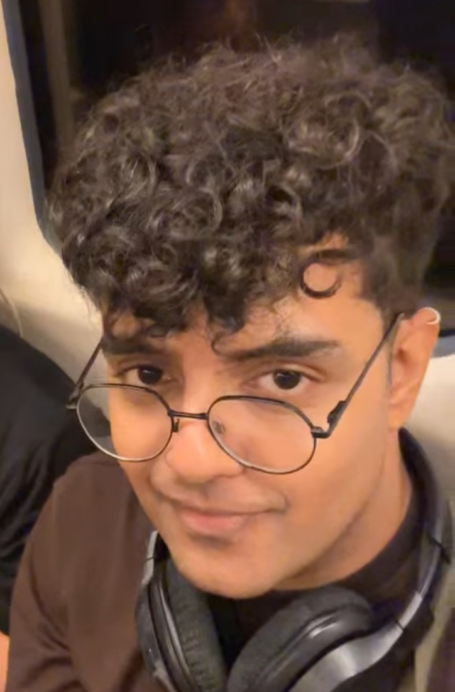
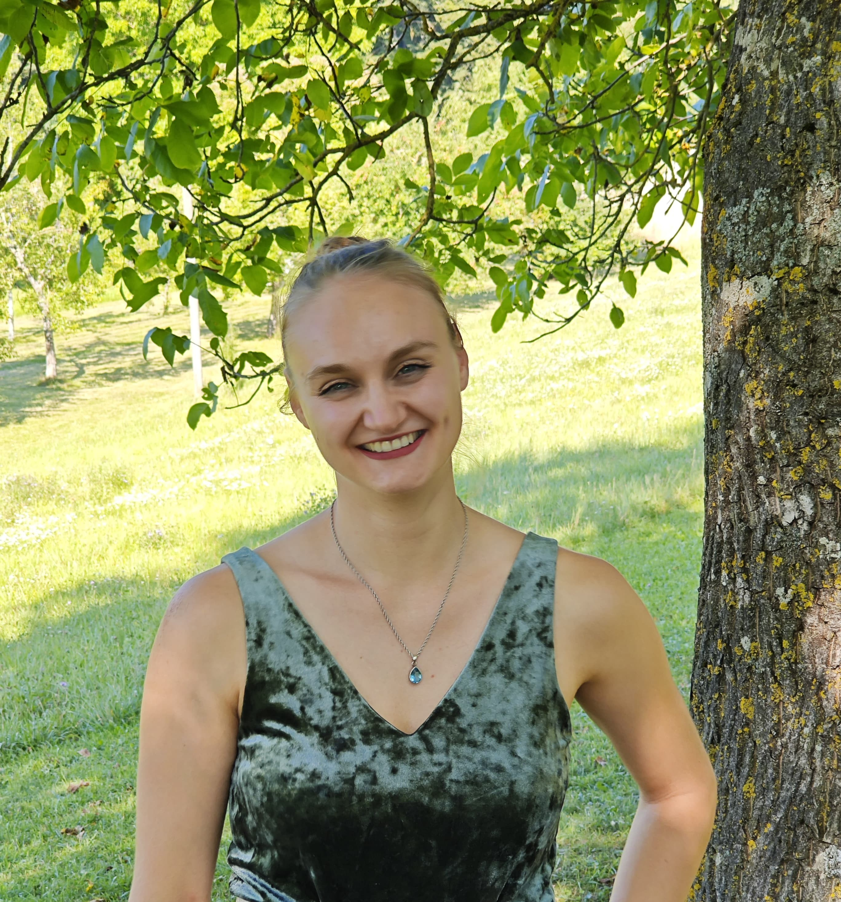
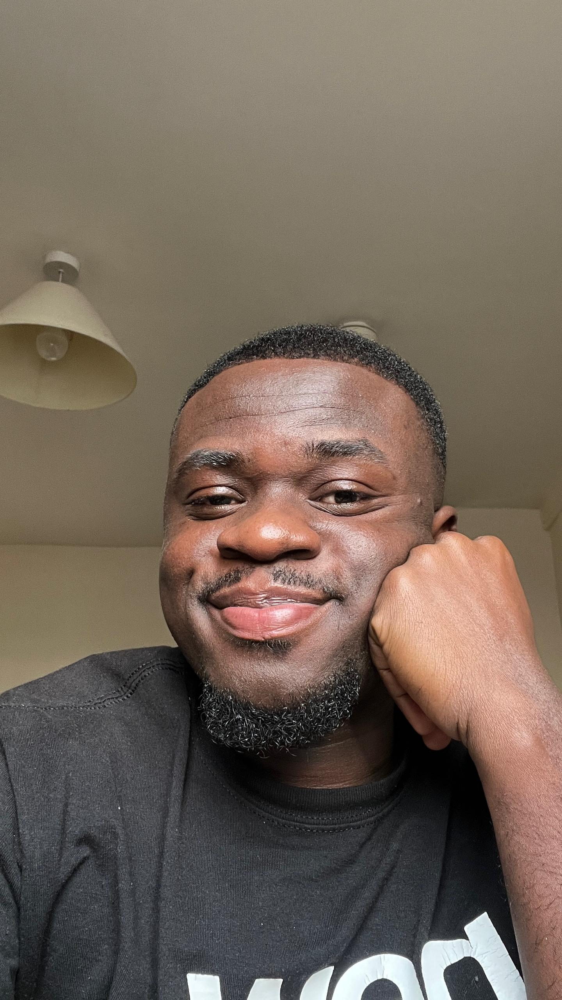
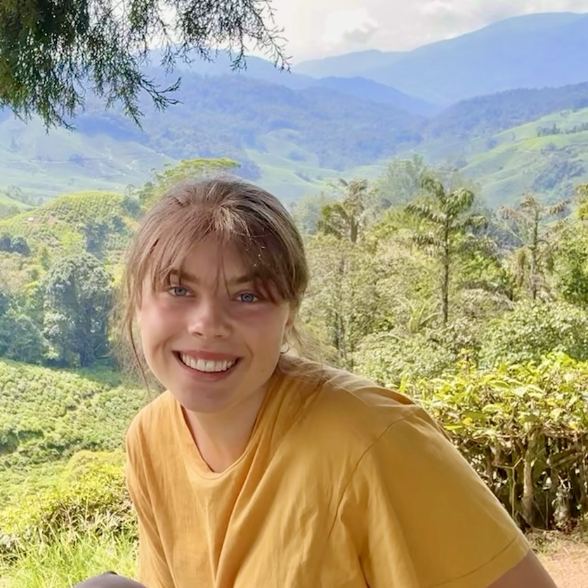
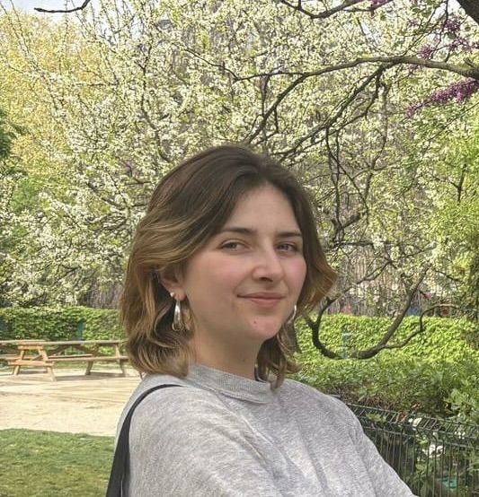
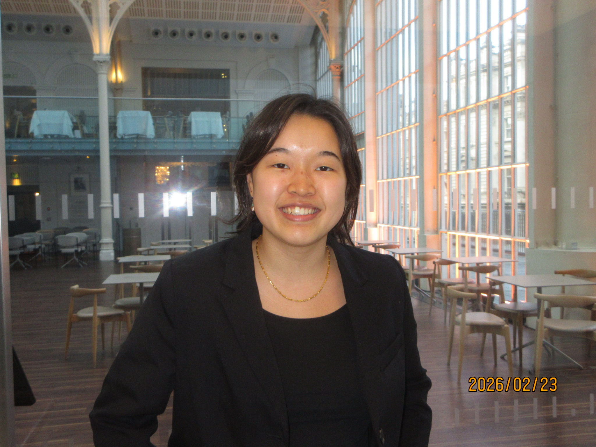
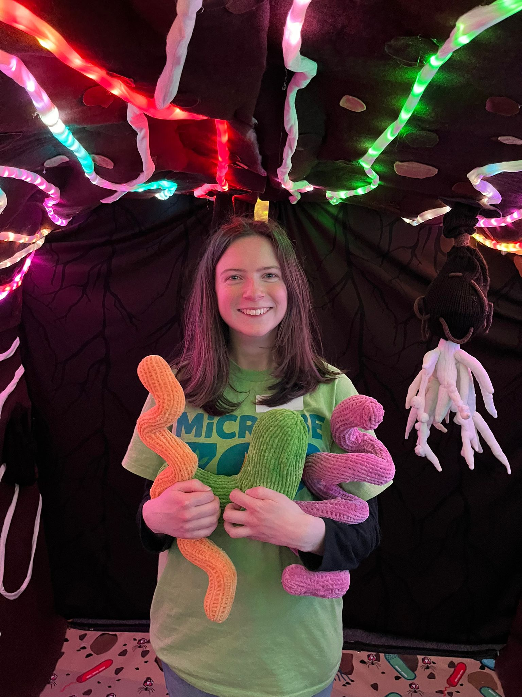
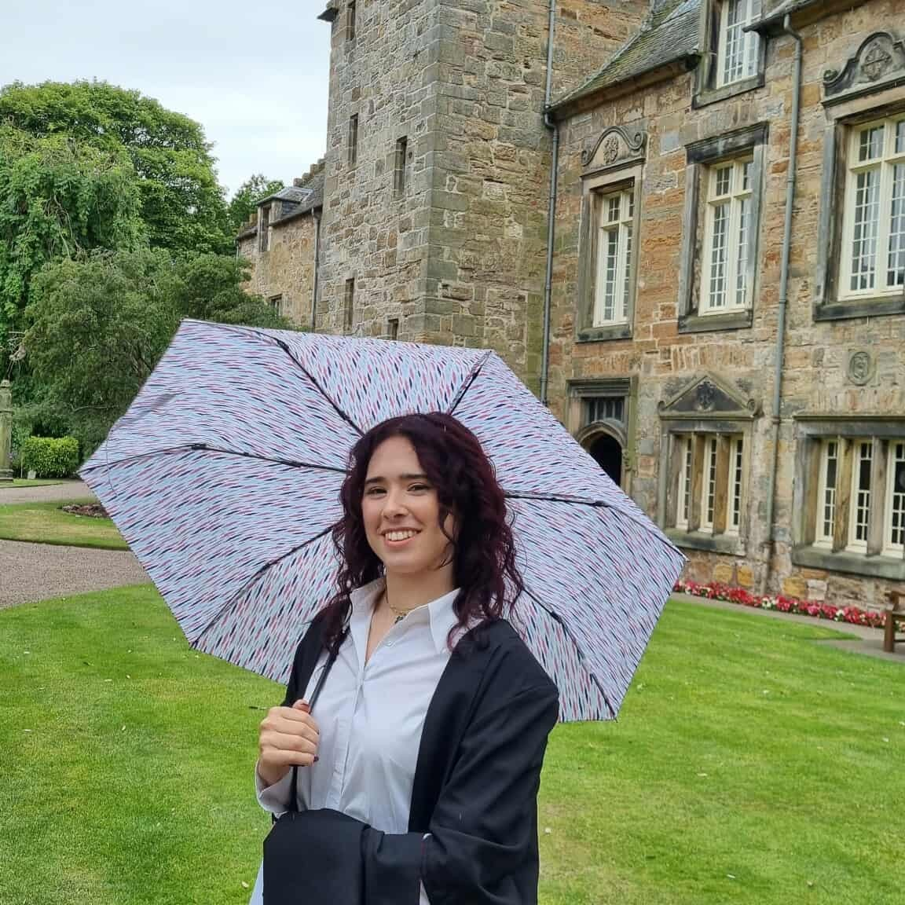

Meet the Team behind NoCaSS 2026
Cambridge

Ina Krüger (she/her)
Ina is a final-year PhD student in Ian Henderson’s group, researching the meiotic crossover landscape in Chlamydomonas reinhardtii. Outside the lab, she enjoys singing in choirs, making her own clothes, and long muddy dog walks.
She is looking forward to learning about all the exciting research happening in Norwich and Cambridge (particularly the genetics and genomics) and hopes that NoCaSS 2026 will be a fantastic opportunity for ECRs to share their research and cultivate connections between institutions.

Chetan Pandey (he/him)
Chetan is a first-year PhD student in Sebastian Schornack's group. His research explores how plant-reproduction-specific genes are co-opted by pathogens as susceptibility factors during infection and cellular accommodation. His favourite lab techniques are CRISPR-CaS9 and Microscopy. Outside the lab, he enjoys singing, producing music, and watching TV shows.
He is excited for NoCASS 2026 and is especially keen to learn more about the diverse and innovative research taking place across Norwich and Cambridge.

Johanna Söntgerath (she/her)
Johanna is a first-year PhD student in Jake Harris’ lab. Johanna is interested in epigenetic regulation and epigenome engineering in plant immunity. In her free time, she enjoys doing outdoor sports and going to the theatre.
As it is her first NoCaSS, she is happy to be involved in the organising team and is looking forward to meeting the community and invited speakers, as well as having great scientific discussions at NoCaSS2026.

Gideon Darko (he/him)
Gideon is an MPhil student in Jordan Price’s lab at Niab. Gideon is interested in biocontrol research for crop protection and plant-microbe interactions. Gideon loves listening to music, hanging out with friends, and cooking African-flavoured meals.
As the only MPhil student on the organising team, he is happy to help publicise the event to attract as many students and young researchers as possible, making NoCASS 2026 the best ever. He looks forward to intellectually stimulating discussions with fellow young researchers and to learning from the array of research underway at partner institutions.

Charlotte Huelsmann (she/her)
Charlotte is a first-year PhD student in Katharina Schiessls group at the SLCU. She is interested in how gene regulatory networks involved in plant development have been co-opted by microbes and is excited to learn more about spatial and single-cell technologies. Outside the lab, she enjoys traveling and getting happily lost on long walks.
Charlotte is looking forward to helping make NoCass 2026 an inclusive environment that fosters exchange among early-career researchers and to learning more about their exciting research interests.
Norwich

Hazel Surtees (she/they)
Hazel is a 2nd-year PhD student in Jacob Malone’s Lab. She’s researching the impact of large conjugative plasmids in the rhizosphere. In her free time, she likes cooking, reading, and spending time in nature.
This year, she’s looking forward to discussing research culture with other early-career researchers and discovering more about the interesting microbiology research happening in Norwich and Cambridge!

Karen Uchida (she/her)
Karen is a pre-doc in Tatsuya Nobori's group at TSL. Karen is interested in plant-microbiome interactions and spatial transcriptomics. Outside the lab, she enjoys listening to classical music, playing the piano, swimming and sometimes inline skating.
Last year, she was at NoCaSS as a master's student, and she really enjoyed meeting and connecting with researchers from diverse backgrounds, so this year she is excited to be on the committee to help make this an exciting and inspiring event for everyone.

Mya Jackson (she/her)
Mya is a pre-doc in the Jonathan Jones lab at TSL. Mya is interested in the molecular mechanisms underpinning plant immunity and plant-microbe interactions. Mya’s hobbies include cooking, singing in choirs, attending life drawing classes, and learning the guitar.
Mya is very excited to be involved in the organisation of NoCaSS 2026, and is most looking forward to the opportunity to form new connections with early-career researchers and learn about their science.

Amber Gentle (she/her)
Amber is a first-year rotation PhD student at the John Innes Centre and TSL. She is interested in the interactions between plants, pathogens and beneficial microbes. She enjoys microscopy, drawing and going for walks through nature.
Amber is looking forward to meeting new people and learning about everyone’s research at NoCaSS 2026.

Zsuzsanna Revesz (she/her)
Zsuzsi is a pre-doc in Saskia Hogenhout's group where her work focuses on the subcellular effects of phytoplasma effectors on plant health. She enjoys combining computational and wet-lab techniques in her work, and is a keen ballroom dancer.
In NoCaSS 2026, Zsuzsi is excited about showcasing the great work of early career researchers across Norwich and Cambridge.